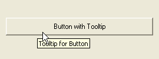

GadgetToolTip()
语法
GadgetToolTip(#Gadget, Text$)概要
Associate the specified Text$ with the #Gadget. A tooltip text is text which is displayed when the mouse cursor is over the gadget for a small amount of time (typically a yellow floating box).
参数
#Gadget The gadget to use. Text$ The tooltip text.
返回值
无.
Remarks
The following gadgets are supported:
- ButtonGadget()
- ButtonImageGadget()
- CalendarGadget()
- CanvasGadget()
- CheckBoxGadget()
- ComboBoxGadget()
- ContainerGadget()
- DateGadget()
- EditorGadget()
- ExplorerListGadget()
- ExplorerTreeGadget()
- HyperLinkGadget()
- ImageGadget()
- IPAddressGadget()
- ListIconGadget()
- ListViewGadget()
- MDIGadget()
- OpenGLGadget()
- OptionGadget()
- PanelGadget()
- ProgressBarGadget()
- ScrollBarGadget()
- SpinGadget()
- SplitterGadget()
- StringGadget()
- TrackBarGadget()
- TreeGadget()
示例
If OpenWindow(0, 0, 0, 270, 100, "GadgetTooltip", #PB_Window_SystemMenu | #PB_Window_ScreenCentered) ButtonGadget(0, 10, 30, 250, 30, "Button with tooltip") GadgetToolTip(0, "Tooltip for Button") Repeat : Until WaitWindowEvent() = #PB_Event_CloseWindow EndIf

已支持操作系统
所有